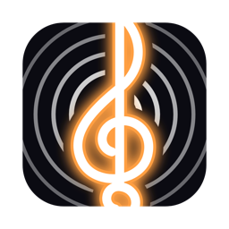
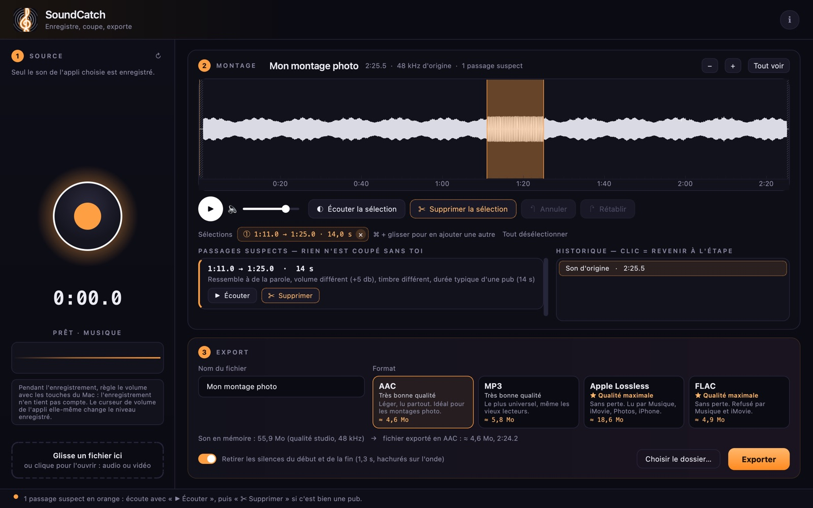
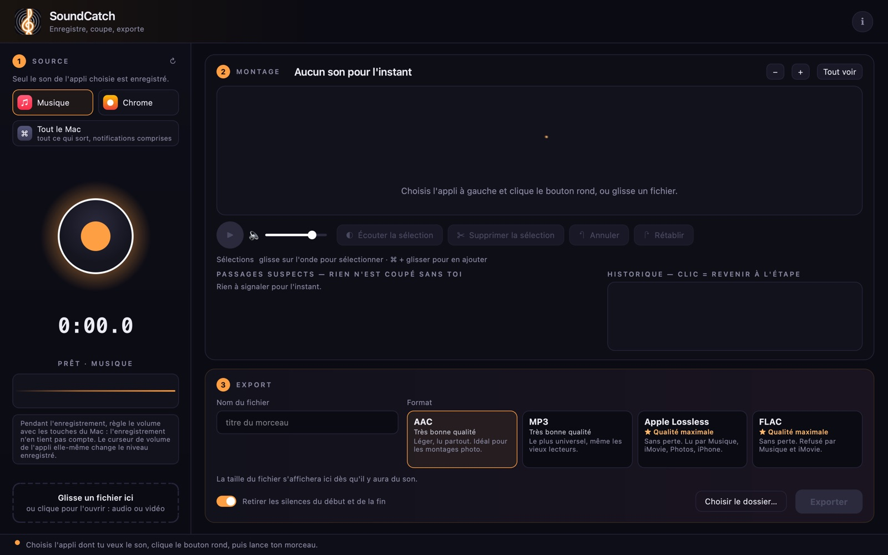

SoundCatch là một trình ghi âm: ứng dụng ghi lại âm thanh phát ra từ ứng dụng bạn chọn (hoặc từ toàn bộ máy Mac), hoặc mở bất kỳ tệp âm thanh hay video nào. Bạn nhìn thấy dạng sóng, dùng chuột chọn những đoạn không cần thiết, nghe lại, xóa đi, rồi xuất ra một tệp gọn gàng — chẳng hạn làm nhạc nền cho một video trình chiếu ảnh. Ứng dụng sử dụng tiếng Pháp.


Bấm hai lần vào SoundCatch-1.0.dmg trong thư mục Tải về.
Sau đó mở ứng dụng từ thư mục Applications.
macOS sẽ yêu cầu quyền “Ghi âm thanh” một lần. Bạn có thể tìm thấy quyền này trong Cài đặt hệ thống → Quyền riêng tư & Bảo mật.
Chạm vào SoundCatch-1.0.0.apk trong thông báo tải xuống hoặc trong Tệp → Tệp đã tải xuống.
Android sẽ đề nghị bạn cho phép trình duyệt cài đặt ứng dụng: bật “Cho phép từ nguồn này”, quay lại, rồi chạm vào “Cài đặt”.
Lần đầu tiên, hãy cho phép “Ghi âm” (chỉ âm thanh của các ứng dụng được thu, không bao giờ thu micrô). Sau đó, mỗi lần ghi, Android sẽ hỏi bạn có đồng ý chia sẻ không: chọn “Chia sẻ toàn bộ màn hình” hoặc ứng dụng cần ghi. Hãy giữ màn hình luôn bật trong khi ghi.
Miễn phí, không quảng cáo, không cần tài khoản. Không có gì được gửi đi đâu cả: âm thanh bạn ghi và các tệp bạn xuất đều ở lại trên thiết bị của bạn.
Hãy ghi âm cho mục đích sử dụng cá nhân và tôn trọng quyền đối với các tác phẩm cũng như điều khoản của các dịch vụ bạn nghe.